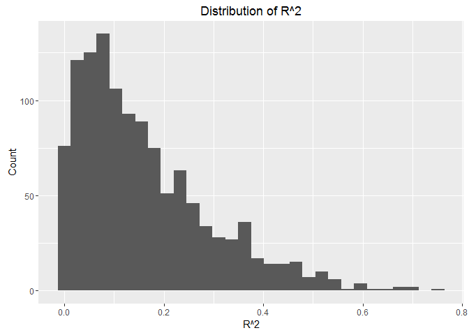
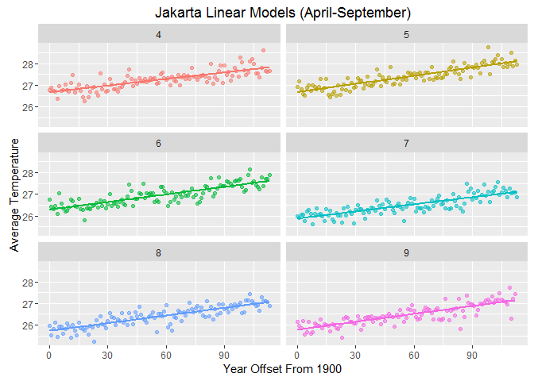
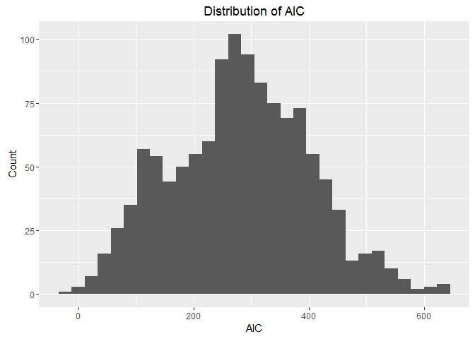
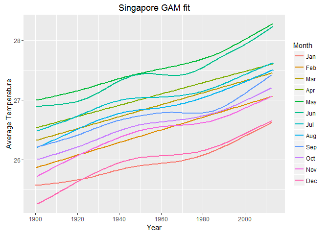

Few days ago, I wanted to explore the Climate Change: Earth Surface Temperature Data dataset published on Kaggle and originally compiled by Berkeley Earth. The dataset is relatively large as it contains entries from 1750-2014!
This was shortly after watching Hadley Wickham’s talk about managing many models with R. So I thought about using the power of purrr,tidy and broom to handle the climate change dataset and I decided to focus on the change in the average temprature in the 100 pre-selected major citis in the dataset.
In this post, I will share the highlights of my analysis to see how we can compress the dataset while keeping all the data in one place including the fitted models . At the end, I will also attach a Shiny App for further interactive exploration. So here we go!
Earth Surface Temprature Dataset
The dataset provided by Kaggle includes several files that group the temperature data by country,state,city and major city. Here I will focus on the major cities in the time interval (1900-2014), and the same process can be applied on other groups.
Exploratory Data Analysis (Main Steps)
The following are the main steps in exploring the trends of climate change in 100 cities.
Reading The Data
First of all, I will the data from GlobalLandTemperaturesByMajorCity.csv and set the column that contains dates to class date. If we take a look at the dataframe, we will have the following summary:
'data.frame': 239177 obs. of 7 variables:
$ dt : Date, format: "1849-01-01" "1849-02-01" ...
$ AverageTemperature : num 26.7 27.4 28.1 26.1 25.4 ...
$ AverageTemperatureUncertainty: num 1.44 1.36 1.61 1.39 1.2 ...
$ City : chr "Abidjan" "Abidjan" "Abidjan" "Abidjan" ...
$ Country : chr "Côte D'Ivoire" "Côte D'Ivoire" "Côte D'Ivoire" "Côte D'Ivoire" ...
$ Latitude : chr "5.63N" "5.63N" "5.63N" "5.63N" ...
$ Longitude : chr "3.23W" "3.23W" "3.23W" "3.23W" ...
Subseting and Nesting The Data
Then I will:
filter the data starting from year 1900
extract the month from the date column
add a new variable with the offset from year 1900 (e.g. 2 corresponds to 1902)
group the data by (City,Country,Month) and nest the rest of the variables
Now we will have a row for each (city,month) combination, and a nested dataframe containing the rest of the data. At the end, we will have a dataframe with 1200 rows (100 city x 12 months).
#nest data, 100 major cities
by_city_month<-dat %>%
filter(year(dt)>=1900) %>%
mutate(Month=month(dt)) %>%
mutate(yr1900=year(dt)-1900) %>%
group_by(City,Country,Month) %>%
nest()
by_city_month
Source: local data frame [1,200 x 4]
City Country Month data
<chr> <chr> <dbl> <list>
1 Abidjan Côte D'Ivoire 1 <tbl_df [114,6]>
2 Abidjan Côte D'Ivoire 2 <tbl_df [114,6]>
3 Abidjan Côte D'Ivoire 3 <tbl_df [114,6]>
4 Abidjan Côte D'Ivoire 4 <tbl_df [114,6]>
5 Abidjan Côte D'Ivoire 5 <tbl_df [114,6]>
6 Abidjan Côte D'Ivoire 6 <tbl_df [114,6]>
7 Abidjan Côte D'Ivoire 7 <tbl_df [114,6]>
8 Abidjan Côte D'Ivoire 8 <tbl_df [114,6]>
9 Abidjan Côte D'Ivoire 9 <tbl_df [114,6]>
10 Abidjan Côte D'Ivoire 10 <tbl_df [113,6]>
.. ... ... ... ...
Defining Regression Functions
Here we will define regression functions to use for all the rows in the created dataframe. We will use yr1900 as the predictor and AverageTemperature as the outcome. since it is hypothesized that the average temperature increases as we advance in time. The first model is a linear model. But since there are significant fluctuations in the average temperature over time, we will also define a generalized additive model to compare.
#define function for linear model
city_model_lm<-function(df) {
lm(AverageTemperature~yr1900, data=df)
}
#define function for GAM
city_model_gam<-function(df) {
gam(AverageTemperature~s(yr1900), data=df)
}
Fitting Regression Models
Here we will use map function from purrr to fit both models for each row. Two new columns will be added to our dataframe. So now each row will also have lists of the linear model and GAM model details.
#create columns for the models
cmodels <- by_city_month %>%
mutate(Model=map(data,city_model_lm),
ModelGam=map(data,city_model_gam)
)
Extracting Models’ Details
Here we will use broom functions:
glance to extract the details of the model
tidy to extract the model estimate
augment to extract the observations statistics.
In addition we will extract r.squared from the linear model summary and AIC from the GAM model summary. All these values will be added in new columns, creating a new dataframe cmodels_details.
cmodels_details<-cmodels %>%
mutate(
glance_lm=Model %>% map(glance), #model summary: rsquared...
rsq=glance_lm %>% map_dbl("r.squared"), #extract rsquared
glance_gam=ModelGam %>% map(broom::glance), #GAM model summary
AIC_gam=glance_gam %>% map_dbl("AIC"), #extract AIC
tidy_lm=Model %>% map(tidy), #model estimate: coeff...
augment_lm=Model %>% map(augment), #observation stats: resid,hat...
res=augment_lm %>% map(".resid") #extract resid
)
Checking Fitted Models
R.squared (Linear Model)
Now if we arrange the new dataframe by the value of R^2, we can see that the highest value is around 0.75 for Jakarta in May.
Source: local data frame [6 x 4]
City Country Month rsq
<chr> <chr> <dbl> <dbl>
1 Jakarta Indonesia 5 0.7508542
2 Jakarta Indonesia 8 0.6973673
3 Jakarta Indonesia 9 0.6918638
4 Jakarta Indonesia 6 0.6740595
5 Jakarta Indonesia 7 0.6739689
6 Surabaya Indonesia 10 0.6463481
And if we look at the distribution of the values of R^2 in the following histogram, we will find that most of the values are very low and few values are higher than 0.6. This indicates that a linear model is not the best one to describe the change in our data. Consequently, interpreting the coefficients will not be indicative. And this goes with the nature of the data, which have high variations and fluctuations.

If we want to look at the top cities with $R^2>0.6$, we can see that we have 9 entries, 6 of them for Jakarta, 2 for Surabaya, and 1 in Singapore.
Source: local data frame [9 x 13]
City Country Month data Model ModelGam
<chr> <chr> <dbl> <list> <list> <list>
1 Jakarta Indonesia 4 <tbl_df [114,6]> <S3: lm> <S3: gam/glm/lm>
2 Jakarta Indonesia 5 <tbl_df [114,6]> <S3: lm> <S3: gam/glm/lm>
3 Jakarta Indonesia 6 <tbl_df [114,6]> <S3: lm> <S3: gam/glm/lm>
4 Jakarta Indonesia 7 <tbl_df [114,6]> <S3: lm> <S3: gam/glm/lm>
5 Jakarta Indonesia 8 <tbl_df [114,6]> <S3: lm> <S3: gam/glm/lm>
6 Jakarta Indonesia 9 <tbl_df [114,6]> <S3: lm> <S3: gam/glm/lm>
7 Singapore Singapore 11 <tbl_df [113,6]> <S3: lm> <S3: gam/glm/lm>
8 Surabaya Indonesia 5 <tbl_df [114,6]> <S3: lm> <S3: gam/glm/lm>
9 Surabaya Indonesia 10 <tbl_df [113,6]> <S3: lm> <S3: gam/glm/lm>
Variables not shown: glance_lm <list>, rsq <dbl>, glance_gam <list>,
AIC_gam <dbl>, tidy_lm <list>, augment_lm <list>, res <list>.
Let’s look at the 6 months in Jakarta with relatively high $R^2$. We can see that the linear model can somehow describe the variation in the data. But we will also check the GAM.

AIC (GAM Model)
Now if we look at the distribution of AIC for the GAM model, we can see that we have a reasonable number of low AIC values, which indicates that the GAM model might be a good fit for more entries.

We can work more on finding the best fit to describe our data. But the high variations caused by the change in measurement equipment or longitude/latitude can make this hard. And with more info, we might find a better way to fit for different time intervals since the measuring equipments changed over time.
Plotting Avergae Temprature Change
Having the dataframe organized in this way, we can unnest the data corresponding to each city and plot the trend of the average temperature change for each month. For example if we take Singapore, we can unnest the corresponding data and pass city_data to the plotting function.
city_data<- cmodels_details %>%
filter(City %in% "Singapore") %>%
unnest(data)

But this is just one example. We might want to view the trends in fewer months or compare several cities, so an interactive graph would be a good solution for further exploration.
Interactive Exploration (Shiny App)
Now you can use this Shiny App to explore the data. You can plot the trend of the average temperature change over time from 1900-2014 in one or more of the 100 major cities. You can also select/deselect one or more months. In addition, you can choose to plot the GAM trend/s, point plot/s or both.